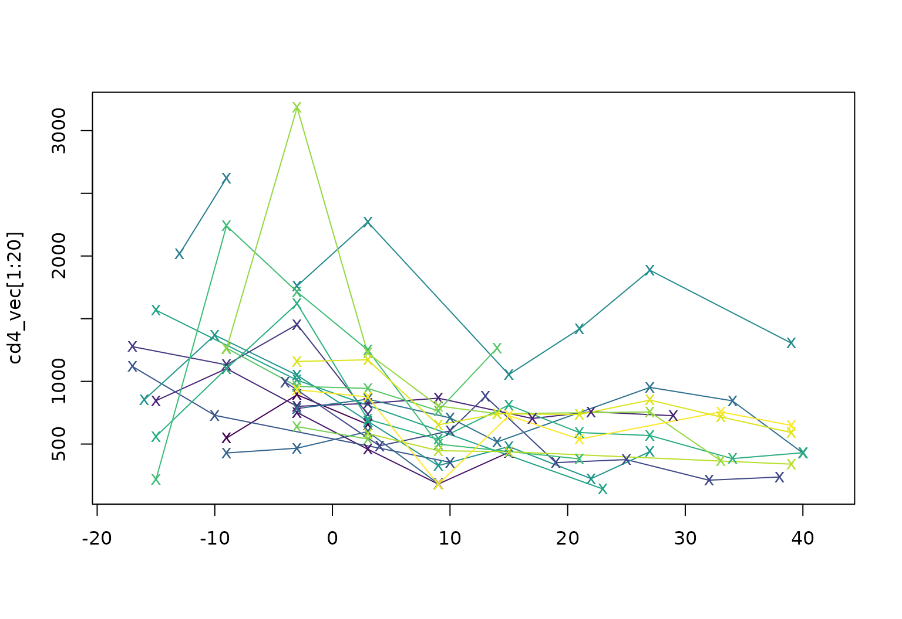
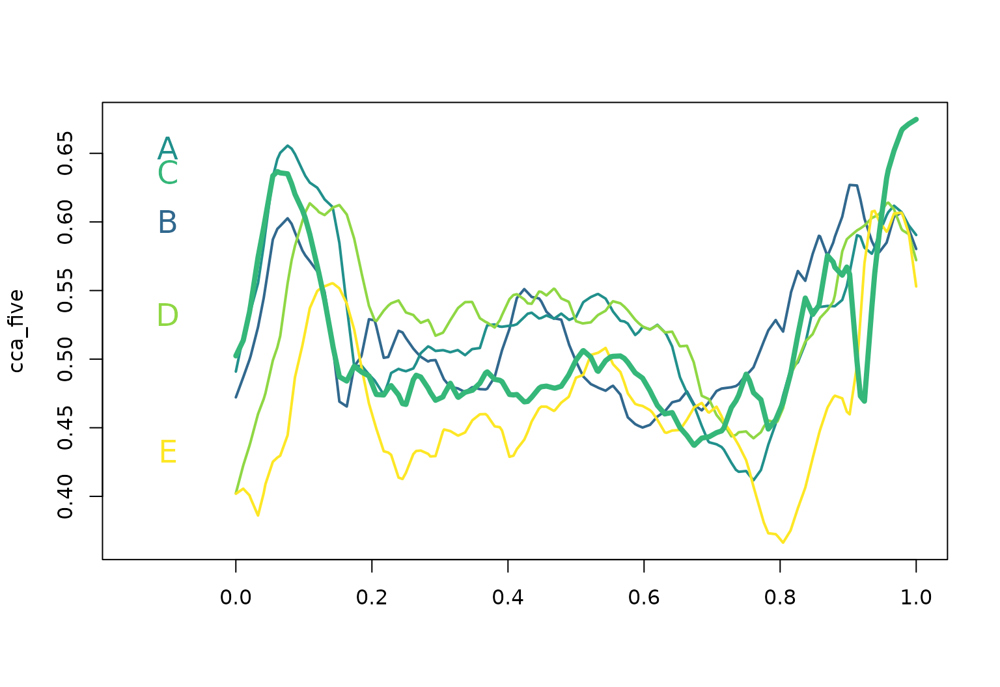

tf Vectors and Operations
Jeff Goldsmith, Fabian Scheipl
2023-06-21
Source:vignettes/x01_tf_Vectors.Rmd
x01_tf_Vectors.RmdThis vignette introduces the tf class, as well as the
tfd and tfb subclasses, and focuses on vectors
of this class. It also illustrates operations for tf
vectors.
tf-Class: Definition
tf-class
tf is a new data type for (vectors of)
functional data:
-
an abstract superclass for functional data in 2 forms:
- as (argument, value)-tuples: subclass
tfd, also irregular or sparse - or in basis representation: subclass
tfbrepresents each observed function as a weighted sum of a fixed dictionary of known “basis functions”.
- as (argument, value)-tuples: subclass
basically, a
listof numeric vectors
(… sincelists work well as columns of data frames …)-
with additional attributes that define function-like behavior:
- how to evaluate the given “functions” for new arguments
- their domain
- the resolution of the argument values
S3based
Example Data
First we extract a tf vector from the
tidyfun::dti_df dataset containing fractional anisotropy
tract profiles for the corpus callosum (cca). When printed,
tf vectors show the first few arg and
value pairs for each subject.
data("dti_df")
cca = dti_df$cca
cca
## tfd[382] on (0,1) based on 73 to 93 (mean: 93) evaluations each
## inter-/extrapolation by tf_approx_linear
## 1001_1: (0.000,0.49);(0.011,0.52);(0.022,0.54); ...
## 1002_1: (0.000,0.47);(0.011,0.49);(0.022,0.50); ...
## 1003_1: (0.000,0.50);(0.011,0.51);(0.022,0.54); ...
## 1004_1: (0.000,0.40);(0.011,0.42);(0.022,0.44); ...
## 1005_1: (0.000,0.40);(0.011,0.41);(0.022,0.40); ...
## 1006_1: (0.000,0.45);(0.011,0.45);(0.022,0.46); ...
## 1007_1: (0.000,0.55);(0.011,0.56);(0.022,0.56); ...
## 1008_1: (0.000,0.45);(0.011,0.48);(0.022,0.50); ...
## 1009_1: (0.000,0.50);(0.011,0.51);(0.022,0.52); ...
## 1010_1: (0.000,0.46);(0.011,0.47);(0.022,0.48); ...
## [....] (372 not shown)We also extract a simple 5-element vector of functions on a regular grid:
cca_five <- cca[1:5, seq(0, 1, l = 93), interpolate = TRUE]
rownames(cca_five) <- LETTERS[1:5]
cca_five <- tfd(cca_five, signif = 2)
cca_five
## tfd[5] on (0,1) based on 93 evaluations each
## interpolation by tf_approx_linear
## A: (0.000,0.49);(0.011,0.52);(0.022,0.54); ...
## B: (0.000,0.47);(0.011,0.49);(0.022,0.50); ...
## C: (0.000,0.50);(0.011,0.51);(0.022,0.54); ...
## D: (0.000,0.40);(0.011,0.42);(0.022,0.44); ...
## E: (0.000,0.40);(0.011,0.41);(0.022,0.40); ...For illustration, we plot the vector cca_five below.
tf subclass:
tfd
tfd objects contain “raw” functional
data:
- represented as a list of
evaluations\(f_i(t)|_{t=t'}\) and correspondingargument vector(s) \(t'\) - has a
domain: the range of validargs.
cca_five %>% tf_evaluations() %>% str
## List of 5
## $ A: num [1:93] 0.491 0.517 0.536 0.555 0.593 ...
## $ B: num [1:93] 0.472 0.487 0.502 0.523 0.552 ...
## $ C: num [1:93] 0.502 0.514 0.539 0.574 0.603 ...
## $ D: num [1:93] 0.402 0.423 0.44 0.46 0.475 ...
## $ E: num [1:93] 0.402 0.406 0.399 0.386 0.409 ...
cca_five %>% tf_arg() %>% str
## num [1:93] 0 0.0109 0.0217 0.0326 0.0435 ...
cca_five %>% tf_domain()
## [1] 0 1- each
tfd-vector contains anevaluatorfunction that defines how to inter-/extrapolateevaluationsbetweenargs (and remembers results of previous calls)
tf_evaluator(cca_five) %>% str
## function (x, arg, evaluations)
tf_evaluator(cca_five) <- tf_approx_spline-
tfdhas two subclasses: one for regular data with a common grid and one for irregular or sparse data. Theccadata are irregular (values are missing for some subjects at some arguments) but the example below more clearly illustrates support for sparse and irregular data using CD4 cell counts from a longitudinal study.
cd4_vec <- tfd(refund::cd4)
cd4_vec[1:2]
## tfd[2] on (-18,42) based on 3 to 4 (mean: 4) evaluations each
## inter-/extrapolation by tf_approx_linear
## [1]: (-9,548);(-3,893);( 3,657)
## [2]: (-3,752);( 3,459);( 9,181); ...
cd4_vec[1:2] %>% tf_arg() %>% str
## List of 2
## $ : num [1:3] -9 -3 3
## $ : num [1:4] -3 3 9 15
cd4_vec[1:20] %>% plot(pch = "x", col = viridis(20))
tf subclass:
tfb
Functional data in basis representation:
- represented as a list of
coefficientsand a commonbasis_matrixof basis function evaluations on a vector ofarg-values. - contains a
basisfunction that defines how to evaluate the basis functions for newargs and how to differentiate or integrate it. - (internal) flavors:
-
tfb_spline: usesmgcv-spline bases -
tfb_fpc: uses functional principal components
-
- significant memory and time savings:
refund::DTI$cca %>% object.size() %>% print(units = "Kb")
## 307.7 Kb
cca %>% object.size() %>% print(units = "Kb")
## 782.4 Kb
cca %>% tfb(verbose = FALSE) %>% object.size() %>% print(units = "Kb")
## 183 Kb
tfb_spline: spline basis
- default for
tfb() - accepts all arguments of
mgcv’ss()-syntax: control basis typebs, basis dimensionk, penalty orderm - also does non-Gaussian fits:
familyargument- all exponential families
- but also: \(t\)-distribution, ZI-Poisson, Beta, …
cca_five_b <- cca_five %>% tfb()
## Percentage of input data variability preserved in basis representation
## (per functional observation, approximate):
## Min. 1st Qu. Median Mean 3rd Qu. Max.
## 95.60 96.40 96.90 97.12 98.00 98.70
cca_five_b[1:2]
## tfb[2] on (0,1) in basis representation:
## using s(arg, bs = "cr", k = 25)
## A: (0.000,0.49);(0.011,0.52);(0.022,0.54); ...
## B: (0.000,0.47);(0.011,0.49);(0.022,0.51); ...
cca_five[1:2] %>% tfb(bs = "tp", k = 55)
## Percentage of input data variability preserved in basis representation
## (per functional observation, approximate):
## Min. 1st Qu. Median Mean 3rd Qu. Max.
## 99.10 99.22 99.35 99.35 99.47 99.60
## tfb[2] on (0,1) in basis representation:
## using s(arg, bs = "tp", k = 55)
## A: (0.000,0.49);(0.011,0.52);(0.022,0.54); ...
## B: (0.000,0.47);(0.011,0.49);(0.022,0.50); ...
cca_five[1:2] %>% tfb(bs = "ps", m = c(2,1), family = mgcv::betar(link = "cloglog"))
## Percentage of input data variability preserved in basis representation
## (on inverse link-scale, per functional observation, approximate):
## Min. 1st Qu. Median Mean 3rd Qu. Max.
## 99.40 99.47 99.55 99.55 99.62 99.70
## tfb[2] on (0,1) in basis representation:
## using s(arg, bs = "ps", m = c(2, 1), k = 25)
## A: (0.000,0.49);(0.011,0.51);(0.022,0.54); ...
## B: (0.000,0.47);(0.011,0.49);(0.022,0.51); ...Penalization:
Function-specific (default), none, prespecified
(sp), or global:
layout(t(1:2))
cca_five %>% plot()
cca_five_b %>% plot(col = "red")
cca_five %>% tfb(k = 35, penalized = FALSE) %>% lines(col = "blue")
## Percentage of input data variability preserved in basis representation
## (per functional observation, approximate):
## Min. 1st Qu. Median Mean 3rd Qu. Max.
## 98.5 98.6 98.7 99.0 99.6 99.6
cca_five %>% tfb(sp = .001) %>% lines(col = "orange")
## Percentage of input data variability preserved in basis representation
## (per functional observation, approximate):
## Min. 1st Qu. Median Mean 3rd Qu. Max.
## 72.60 75.90 76.50 76.54 77.20 80.50“Global” smoothing:
- estimate smoothing parameters for subsample (~10%) of curves
- apply geometric mean of estimated smoothing parameters to smooth all curves
Advantages:
- (much) faster than optimizing penalization for each curve
- should scale well for larg-ish datasets
Disadvantages
- no real borrowing of information across curves (very sparse or functional fragment data, e.g.)
- still requires more observations than basis functions per curve
- subsample could miss small subgroups with different roughness, over-/undersmooth parts of the data, see below.
Dataset with heterogeneous roughness:
layout(t(1:3))
clrs <- scales::alpha(sample(viridis(15)), .5)
plot(raw, main = "raw", col = clrs)
plot(tfb(raw, k = 55), main = "separate", col = clrs)
## Percentage of input data variability preserved in basis representation
## (per functional observation, approximate):
## Min. 1st Qu. Median Mean 3rd Qu. Max.
## 72.20 88.65 94.80 92.06 96.55 97.70
plot(tfb(raw, k = 55, global = TRUE), main = "global", col = clrs)
## Using global smoothing parameter sp = 3.25e-05, estimated on subsample of curves.
## Percentage of input data variability preserved in basis representation
## (per functional observation, approximate):
## Min. 1st Qu. Median Mean 3rd Qu. Max.
## 71.20 80.35 86.40 86.46 95.00 96.90
tfb FPC-based
- uses first few eigenfunctions computed from a simple unregularized (weighted) SVD of the data matrix by default
- corresponding FPC basis and mean function saved as
tfd-object - observed functions are linear combinations of those.
- amount of “smoothing” can be controlled (roughly!) by setting the
minimal percentage of variance explained
pve
(cca_five_fpc <- cca_five %>% tfb_fpc(pve = .999))
## tfb[5] on (0,1) in basis representation:
## using 4 FPCs
## A: (0.000,0.49);(0.011,0.52);(0.022,0.54); ...
## B: (0.000,0.47);(0.011,0.49);(0.022,0.50); ...
## C: (0.000,0.50);(0.011,0.51);(0.022,0.54); ...
## D: (0.000,0.40);(0.011,0.42);(0.022,0.44); ...
## E: (0.000,0.40);(0.011,0.41);(0.022,0.40); ...
(cca_five_fpc_lowrank <- cca_five %>% tfb_fpc(pve = .3))
## tfb[5] on (0,1) in basis representation:
## using 1 FPCs
## A: (0.000,0.47);(0.011,0.49);(0.022,0.51); ...
## B: (0.000,0.48);(0.011,0.49);(0.022,0.52); ...
## C: (0.000,0.46);(0.011,0.48);(0.022,0.50); ...
## D: (0.000,0.46);(0.011,0.48);(0.022,0.49); ...
## E: (0.000, 0.4);(0.011, 0.4);(0.022, 0.4); ...
layout(t(1:2))
cca_five %>% plot()
cca_five_fpc %>% plot(col = "red", ylab = "tfb_fpc(cca_five)")
cca_five_fpc_lowrank %>% lines(col = "blue")tfb_fpc is currently only implemented for data on
identical (but possibly non-equidistant) grids. The
{refunder} rfr_fpca-functions
provide FPCA methods for irregular and sparse data and
regularized/smoothed FPCA.
tf-Class: Methods
tidyfun implements almost all types of
operations that are available for conventional numerical or logical
vectors for tf-vectors as well, so you can:
subset & subassign:
cca_five[1:2]
## tfd[2] on (0,1) based on 93 evaluations each
## interpolation by tf_approx_spline
## A: (0.000,0.49);(0.011,0.52);(0.022,0.54); ...
## B: (0.000,0.47);(0.011,0.49);(0.022,0.50); ...
cca_five[1:2] <- cca_five[2:1]
cca_five
## tfd[5] on (0,1) based on 93 evaluations each
## interpolation by tf_approx_spline
## B: (0.000,0.47);(0.011,0.49);(0.022,0.50); ...
## A: (0.000,0.49);(0.011,0.52);(0.022,0.54); ...
## C: (0.000,0.50);(0.011,0.51);(0.022,0.54); ...
## D: (0.000,0.40);(0.011,0.42);(0.022,0.44); ...
## E: (0.000,0.40);(0.011,0.41);(0.022,0.40); ...summarize:
c(mean = mean(cca_five), sd = sd(cca_five))
## tfd[2] on (0,1) based on 93 evaluations each
## interpolation by tf_approx_spline
## mean: (0.000, 0.45);(0.011, 0.47);(0.022, 0.48); ...
## sd: (0.000,0.049);(0.011,0.052);(0.022,0.062); ...
tf_depth(cca_five) ## Modified Band-2 Depth (à la Sun/Genton/Nychka, 2012), others to come.
## B A C D E
## 0.6108696 0.6467391 0.6597826 0.5728261 0.5097826
median(cca_five) == cca_five[which.max(tf_depth(cca_five))]
## C
## TRUEIn addition, tidyfun provides methods
specific for functional data:
evaluate:
tf-objects have a special [-operator: Its
second argument specifies argument values at which to
evaluate the functions and has some additional options, so it’s easy to
get point values for tf objects:
cca_five[1:2, seq(0, 1, l = 3)]
## 0 0.5 1
## B 0.4721627 0.4984125 0.5802742
## A 0.4909345 0.5307563 0.5904773
## attr(,"arg")
## [1] 0.0 0.5 1.0
cca_five["B", seq(0, .15, l = 3), interpolate = FALSE]
## 0 0.075 0.15
## B 0.4721627 NA NA
## attr(,"arg")
## [1] 0.000 0.075 0.150
cca_five[1:2, seq(0, 1, l = 7), matrix = FALSE] %>% str
## List of 2
## $ B:'data.frame': 7 obs. of 2 variables:
## ..$ arg : num [1:7] 0 0.167 0.333 0.5 0.667 ...
## ..$ value: num [1:7] 0.472 0.475 0.476 0.498 0.475 ...
## $ A:'data.frame': 7 obs. of 2 variables:
## ..$ arg : num [1:7] 0 0.167 0.333 0.5 0.667 ...
## ..$ value: num [1:7] 0.491 0.521 0.504 0.531 0.472 ...(simple, local) smoothing
layout(t(1:3))
cca_five %>% plot(alpha = .2, ylab = "lowess")
cca_five %>% tf_smooth("lowess") %>% lines(col = pal_5)
## using f = 0.15 as smoother span for lowess
cca_five %>% plot(alpha = .2, ylab = "rolling median (k=5)")
cca_five %>% tf_smooth("rollmedian", k = 5) %>% lines(col = pal_5)
## Warning in tf_smooth.tfd(., "rollmedian", k = 5): non-equidistant arg-values in
## '.' ignored by rollmedian.
## setting fill = 'extend' for start/end values.
cca_five %>% plot(alpha = .2, ylab = "Savitzky-Golay (quartic, 11 steps)")
cca_five %>% tf_smooth("savgol", fl = 11) %>% lines(col = pal_5)
## Warning in tf_smooth.tfd(., "savgol", fl = 11): non-equidistant arg-values in
## '.' ignored by savgol.
differentiate & integrate:
layout(t(1:3))
cca_five %>% plot(col = pal_5)
cca_five %>% tf_smooth() %>% tf_derive() %>% plot(col = pal_5, ylab = "tf_derive(tf_smooth(cca_five))")
## using f = 0.15 as smoother span for lowess
cca_five %>% tf_integrate(definite = FALSE) %>% plot(col = pal_5)
cca_five %>% tf_integrate()
## B A C D E
## 0.5202229 0.5266713 0.5090638 0.5308612 0.4661378query
tidyfun makes it easy to find (ranges
of) arguments \(t\)
satisfying a condition on value \(f(t)\) (and argument \(t\)):
cca_five %>% tf_anywhere(value > .65)
## B A C D E
## FALSE TRUE TRUE FALSE FALSE
cca_five[1:2] %>% tf_where(value > .6, "all")
## $B
## [1] 0.07608696 0.89130435 0.90217391 0.91304348 0.92391304 0.96739130 0.97826087
##
## $A
## [1] 0.05434783 0.06521739 0.07608696 0.08695652 0.09782609 0.10869565
## [7] 0.11956522 0.13043478 0.14130435 0.95652174 0.96739130 0.97826087
cca_five[2] %>% tf_where(value > .6, "range")
## begin end
## A 0.05434783 0.9782609
cca_five %>% tf_where(value > .6 & arg > .5, "first")
## B A C D E
## 0.8913043 0.9565217 0.9565217 0.9347826 0.9347826zoom & query
cca_five %>% plot(xlim = c(-0.15, 1), col = pal_5, lwd = 2)
text(x = -.1, y = cca_five[,0.07], labels = names(cca_five), col = pal_5, cex = 1.5)
median(cca_five) %>% lines(col = pal_5[3], lwd = 4)
# where are the first maxima of these functions?
cca_five %>% tf_where(value == max(value), "first")
## B A C D E
## 0.90217391 0.07608696 1.00000000 0.10869565 0.93478261
# where are the first maxima of the later part (t > .5) of these functions?
cca_five[c("A", "D")] %>% tf_zoom(.5, 1) %>% tf_where(value == max(value), "first")
## A D
## 0.9673913 0.9565217
# which f_i(t) are below the functional median anywhere for 0.2 < t < 0.6?
# (t() needed here so we're comparing column vectors to column vectors...)
cca_five %>% tf_zoom(0.2, 0.6) %>% tf_anywhere(value <= t(median(cca_five)[, arg]))
## B A C D E
## TRUE FALSE TRUE FALSE TRUE